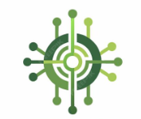

Data science consultancy
Experiment design, modelling strategy, evaluation, and documentation when outcomes must hold up to scrutiny—internal or external.
- Problem framing & success metrics
- Model & evaluation design
- Reproducible pipelines & reporting
- Pre-launch validation & sign-off